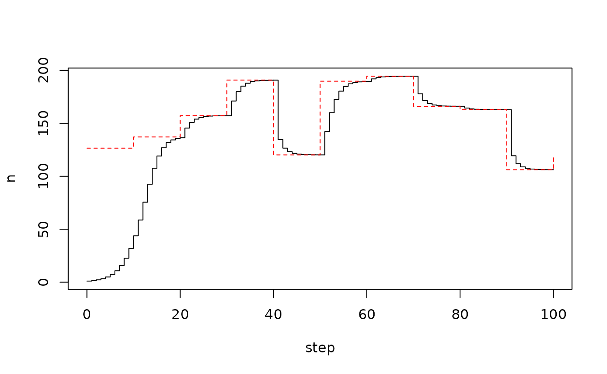

odin.dust is built on odin, and so many models will work
without modification, however there are some differences.
output() (this is
allowed for ODE models)interpolate()
dust as the engineThere are some big advantages though in using odin.dust instead of the stochastic model support in odin:
Below, we describe how to address the most common issues when updating dust models to use odin.dust
output()
(This section applies only to discrete time models, you can use
output() freely in ODE models as in odin)
In odin you can write:
and use this to create a model where you have one input variable (on which the system depends) and one output variable (entirely derived from the inputs).
gen$new()$run(0:5)
#> step x y
#> [1,] 0 1 0.5
#> [2,] 1 2 1.0
#> [3,] 2 3 1.5
#> [4,] 3 4 2.0
#> [5,] 4 5 2.5
#> [6,] 5 6 3.0This is important in ODE models because there are often things that you want to observe that are functions of the system but for which you can’t write out equations to describe them in terms of their rates - the sum over a set of variables for example.
Note here how the x used in the calculation is really
the x at the end of a time step, not the
x on inputs, which means that the output column satisfies
y == x / 2. This turns out to be very hard to get right and
reason about, and involves some fairly unpleasant bookkeeping in
dde; in effect we run an additional time step at the end of
the run in order to compute these output variables, and
that is inefficient for dust’s use within a particle filter.
More importantly, there is no great need for output for
discrete time models, as we can treat y above as just
another variable. This also allows us to be more explicit about when
within the time step this output is being computed:
gen <- odin.dust::odin_dust({
initial(x) <- 1
new_x <- x + 1
update(x) <- new_x
initial(y1) <- 0
initial(y2) <- 0
update(y1) <- x / 2
update(y2) <- new_x / 2
})We will probably deprecate these in odin for discrete time model
because these turned out to be hard to get right - we need to compute
the output variables at the end of the time step, which lead to
confusion about which x was being read - the x
at the beginning of the time step or the x at the end. This
is implemented by some fairly unpleasant bookkeeping that we would like
to drop.
t(drop(gen$new(list(), 0, 1)$simulate(0:5)))
#> [,1] [,2] [,3]
#> [1,] 1 0.0 0.0
#> [2,] 2 0.5 1.0
#> [3,] 3 1.0 1.5
#> [4,] 4 1.5 2.0
#> [5,] 5 2.0 2.5
#> [6,] 6 2.5 3.0Here, the first column is x as in the first column. The
second column computes the relationship with the x at the
beginning of the time step, while the third is most equivalent to our
previous output command and requires storing the that will
become the updated x in order to use that value to both
update x and y2.
interpolate()
We may support this in future for ODE models, but are undecided as to if this makes sense for discrete-time models.
For ODE models, unfortunately there’s nothing you can do at present.
Get in touch if this is a limitation that you would like to overcome as
we will need to implement support both in this package and in
mode.
For discrete-time models we recommend doing the interpolation as part of your parameter preparation and passing in an expanded vector which you then look up. This also makes it (somewhat) more obvious how time is being treated in your model.
For an example, here’s a model of logistic growth in discrete time, where the carrying capacity varies seasonally, implemented as a piecewise-constant interpolation between some points. It’s easy enough to create some sort of time varying time series to use:
Somewhat awkwardly, the step number here will be used as the “time” variable (vs within an ODE model where there’s much more of a concept of time).
gen <- odin::odin({
initial(n) <- 1
update(n) <- (1 + r * (1 - n / K)) * n
r <- user(0.5)
K <- interpolate(t_capacity, y_capacity, "constant")
t_capacity[] <- user()
y_capacity[] <- user()
dim(t_capacity) <- user()
dim(y_capacity) <- user()
})Then run this model
pars <- list(t_capacity = t_capacity, y_capacity = y_capacity)
mod <- gen$new(user = pars)
plot(mod$run(0:100), type = "s")
lines(t_capacity, y_capacity, type = "s", col = "red", lty = 2)
Everything is unambiguous for a continuous time model, but here it’s not so clear - when we do the lookup with step, what are we finding?
The other complication arises when you want to rescale time, so that
each step has a size of dt and then you want to think about
interpolation in this new time variable; for example
gen <- odin::odin({
initial(n) <- 1
update(n) <- (1 + r * dt * (1 - n / K)) * n
initial(time) <- 0
update(time) <- time + dt # or equivalently (step + 1) * dt
r <- user(0.5)
dt <- user(0.25)
K <- interpolate(t_capacity, y_capacity, "constant")
t_capacity[] <- user()
y_capacity[] <- user()
dim(t_capacity) <- user()
dim(y_capacity) <- user()
})Here, we scale the rate of change r by our
dt parameter, and we output a new variable
time which keeps track of our rescaling. Once we do this we
need to also rescale the times used in the interpolation.
Our current workaround is to create a full set of interpolated values by step as a parameter, using one of R’s interpolation functions. To look up the value, we use
K_step[] <- user()
dim(K_step) <- user()
K <- if (as.integer(step) >= length(K)) K[length(K)] else K[step + 1]which looks up the value of K from a fully expanded set,
falling back on returning the last value for any steps beyond the end of
the series. Here, step can be translated into time by
step * dt and at the end of the step time will
have this value (so this value of K is used in the move
from step - 1 to step).
Delays have never really been supported for discrete time models in odin, but they are useful for ODE models. Our DDE solver is extremely basic and is unlikely to do well with ODEs that use stochasticity (see below), so we have chosen not to expose it in dust.
One potential use of delays in discrete time models is to allow computing incidence from prevalence. Suppose that you have some cumulative variable (say, number of total infections) and you want to compute the number of infections over some time period, you could compute this by doing
total <- total + new # accumulating variable
total_lag <- delay(total, 10) # lag of the variable total by 10 time steps
incidence <- total - total_lag # number of events in the last 10 time stepsThis is particularly useful for models where you are fitting to incidence data.
Our suggested workaround to this is to use an accumulator variable that you reset based on a modulo of step with your interval
total <- total + new
initial(incidence) <- 0
update(incidence) <- if (step %% 10 == 0) new else incidence + newFor stochastic models, odin.dust uses dust
for random numbers, which has the big advantage that they can be
computed in parallel. The disadvantage is that it does not support the
full set of distributions implemented in R and therefore available to
odin
Supported distributions:
rbinom)rexp)rnorm)rgamma)rhyper)rnbinom)rpois)unif)Unsupported distributions:
rbeta)rnbeta)rcauchy)chisq)rnchisq)rf)rnf)rgeom)rlogis)rlnorm)rt)rnt)rweibull)rwilcox)rsignrank)There are two special cases, for the multinomial
(rmultinom) and the multivariate hypergeometric
(rmhyper; not available in R but available in odin). These
are both available in a limited form in odin, where you can use them
where the left hand side is a vector
prob[] <- user()
y[] <- rmultinom(size, prob)where size is the number of trials and prob
is a normalised vector of probabilities of success in each of the
length(prob) classes. Note that y, the
outcome, must have the same length of prob.
This is quite limiting as you cannot assign a sample as a row into a matrix or higher-dimensional structure. We have plans to improve this in odin itself (see #134, #213 and #255) but do not anticipate that this will be implemented in the short term.
In the binomial case you can rewrite the multinomial sampling as a series of binomials, for example the above expression could be rewritten
A similar transform is possible for the multivariate hypergeometric
from the hypergeometric (see odin’s
rmhyper implementation for details).
These differences all follow from design decisions in dust.
The model is much more stateful. In
odin, you create a model object and use that to run a
simulation over some time steps. With dust you create a
model and can advance it to a point in the simulation, then retrieve
state, reorder particles (individual realisations), or update state,
then continue. See this
vignette for more information.
The model size cannot be changed after
initialisation. While you can update parameters (via the
$update_state method), it is an error if this changes the
size of the state vector. This allows us to be much more efficient in
terms of allocations, and is important to support the stateful
interactions.
There is an assumption that more than one realisation is
generally wanted. With discrete time and stochastic models in
odin, the interface matches that of the ODE solver where we assume
you’re interested in a single solution to a set of equations. With
odin.dust (via dust) we assume that you are
interested in a set of realisations, and so the return types have been
structured with a “particle” dimension to make this easier. This also
has the effect of moving time into the last dimensions of any returned
data, not the first as in odin.
Compilation is much slower. This does make iteration over models more tedious, unfortunately. The slower compilation is a function of using C++ with a reasonable amount of template metaprogramming.